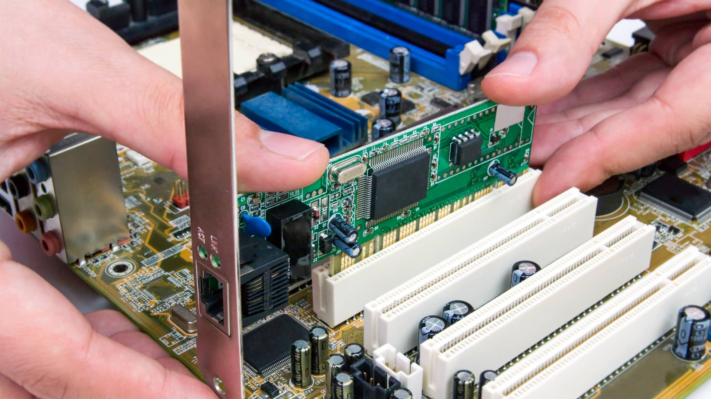

TARJETA DE RED
Empezar presentación
¿Qué es y para qué sirve?
La tarjeta de red o NIC es un componente hardware que se conecta a la placa base mediante los Slots o ranuras de expansión.
- Sirve para:
Realiza conexiones LAN
Expandir el nº de puertos Ethernet
Aumentar la velocidad de conexión (si tenemos 2 redes distintas)
Compartir recuros
¿Como funciona?
Su función es hacer de intermediario entre el conector y nuestro equipo con un dispositivo para conectarnos a internet.
Para realizar recivir y enviar, utiliza una serie de protocolos como el IEEE 802 que permite enviar y recibir datos por la red, fragmentando y encapsulando la información de la forma correcta.
Dentro de una redcada tarjeta tiene a una IP que identifica a ese dispositivo dentro de la red, pero además cada una tienen una dirección MAC que se diferencia de la IP en que la IP es asociada de forma automática por el router y puede cambiar en cualquier momento, además de que fuera de la red LAN hay IPs iguales, mientras que la MAC identifica de forma única a cada dispositivo hardware en el mundo.


Tipos
Esta es la tarjeta de red normal (de la que hemos hablado anteriormente), usa un conector RJ-45 para conexiones ADSL.
Tiene velocidades de hasta 1000MB
Tarjeta RJ45
Esta tarjeta no cuenta con ningún conector, en su lugar tiene una o varias antenas que le permiten conectarse a la red de forma inalámbrica.
Existen 2 tipos. Una para ordenadores de sobremesa (PCI) y otra para portátiles (PCIExpres)
Tarjeta Wi-Fi
Esta simplemente es una tarjeta de red Wi-Fi que se conecta por el puerto USB.
Tarjeta UBS
Este es un tipo de tarjeta relativamente novedosa, ya que tiene un conector especial que permite captar las señales de la luz que utilizan los cables de fibra óptica.
Tarjeta Óptica
Marcas de tarjetas de red
Fundada en 1996, TP-Link es un proveedor global de dispositivos y accesorios de redes fiables, involucrados en todos los aspectos de la vida cotidiana. La firma analista IDC clasifica a la compañía de manera sistemática como el proveedor número 1 de dispositivos Wi-Fi*, suministrando dispositivos a más de 170 países y brindando servicios a miles de millones de personas en todo el mundo.
ASUS es una empresa multinacional establecida en Taiwán desde 1989 que diseña y fabrica hardware de informática y electrónica de consumo.
También desarrolla productos de realidad aumentada y virtual, así como dispositivos IOT y tecnologías robóticas.
El fabricante D-Link es actualmente uno de los líderes mundiales de infraestructura de redes y comunicaciones para el sector empresarial y también de consumo. Está centrada en la fabricación de puntos de acceso, switches, switches industriales, routers, adaptadores de red, cámaras ip y routers.
información de PDF: Trabajo de periféricos (Tarjeta de red)